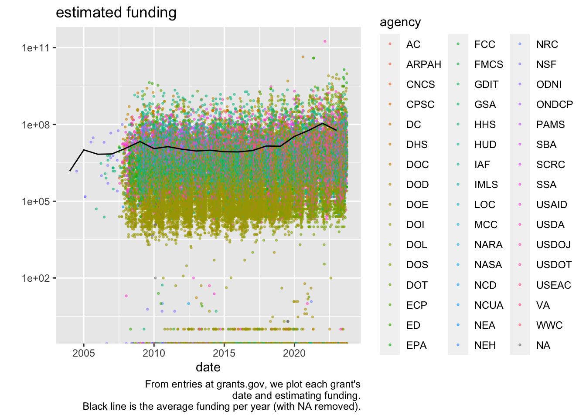
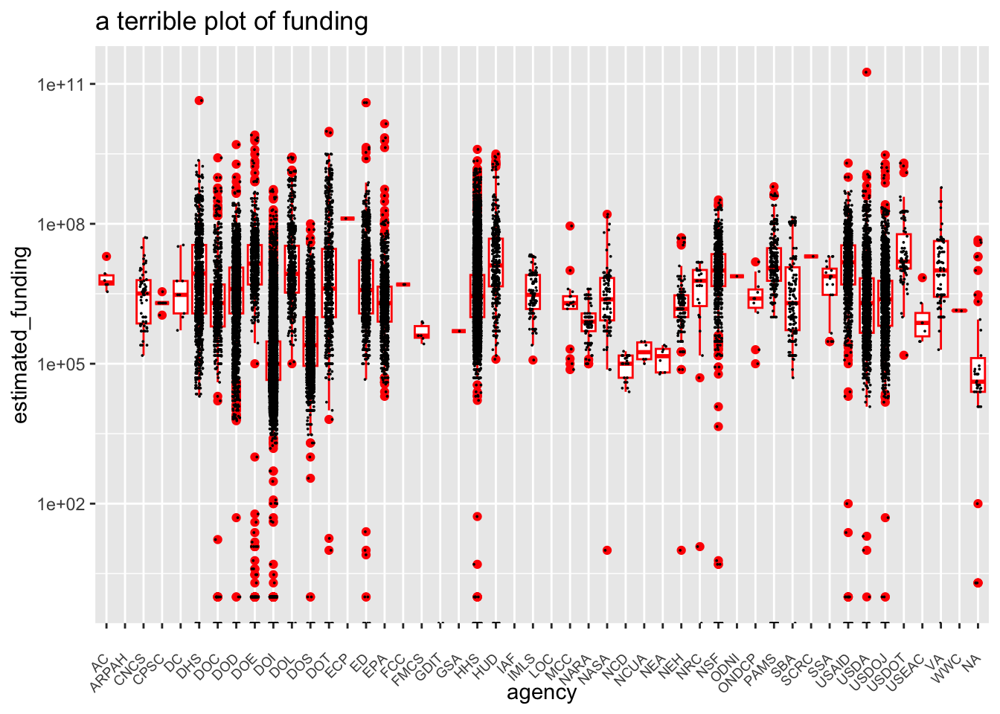

library(tidyverse) # ggplot, lubridate, dplyr, stringr, readr...
library(praise)Grant Opportunities
The Data
All grants past and present from Grants.gov.
grant_opportunity_details <- read_csv("grant_opportunity_details.csv")
grants <- read_csv("grants.csv") |>
separate(agency_code, c("agency", "sub_agency"), remove = FALSE) |>
mutate(year = ymd(paste0(year(posted_date), "01", "01")))Exploring the data
grants |>
ggplot(aes(x = posted_date, y = estimated_funding)) +
geom_point(aes(color = agency), size = .5, alpha = 0.5) +
scale_y_log10() +
geom_line(data = summarize(group_by(grants, year), mean_fund = mean(estimated_funding, na.rm = TRUE)),
aes(x = year, y = mean_fund)) +
labs(title = "estimated funding",
y = "", x = "date",
caption = "From entries at grants.gov, we plot each grant's\ndate and estimating funding.\nBlack line is the average funding per year (with NA removed).")

grants |>
select(agency) |>
table() |>
length()[1] 47grants |>
ggplot(aes(x = agency, y = estimated_funding)) +
geom_boxplot(color = "red") +
geom_jitter(size = 0.001, height = 0, width = 0.2) +
scale_y_log10() +
theme(axis.text.x = element_text(angle = 45, vjust = 0.5, hjust=1, size = 7)) +
ggtitle("a terrible plot of funding")

grants |>
group_by(agency) |>
summarize(fund_na = sum(!is.na(estimated_funding)), fund_count = n(),
prop_na = mean(!is.na(estimated_funding))) |>
arrange(desc(fund_count))# A tibble: 48 × 4
agency fund_na fund_count prop_na
<chr> <int> <int> <dbl>
1 HHS 11978 21349 0.561
2 DOI 18520 20134 0.920
3 DOS 3468 6192 0.560
4 DOD 2381 3788 0.629
5 USDOJ 2063 3091 0.667
6 USAID 1621 3062 0.529
7 USDA 2386 2577 0.926
8 DOE 1371 1548 0.886
9 ED 1309 1513 0.865
10 NASA 101 1507 0.0670
# ℹ 38 more rowsgrants |>
group_by(agency) |>
summarize(count_low_fund = sum(estimated_funding == 0, na.rm = TRUE),
prop_low_fund = mean(estimated_funding == 0, na.rm = TRUE),
count_fund = n(),
count_fund_isna = sum(is.na(estimated_funding))) |>
arrange(desc(prop_low_fund))# A tibble: 48 × 5
agency count_low_fund prop_low_fund count_fund count_fund_isna
<chr> <int> <dbl> <int> <int>
1 GDIT 2 1 3 1
2 DOE 586 0.427 1548 177
3 PAMS 41 0.125 361 34
4 NSF 111 0.107 1100 63
5 HHS 877 0.0732 21349 9371
6 DOI 971 0.0524 20134 1614
7 USAID 67 0.0413 3062 1441
8 NRC 1 0.0345 54 25
9 DOC 14 0.0163 1238 380
10 HUD 7 0.0156 541 93
# ℹ 38 more rowsgrants |>
filter(agency == "GDIT")# A tibble: 3 × 20
opportunity_id opportunity_number opportunity_title agency_code agency
<dbl> <chr> <chr> <chr> <chr>
1 127193 10112011-TESTOPPORTUNITY-2 10112011-TESTOPP… GDIT-08 GDIT
2 51678 MARWAN-020610 marwan-020610 GDIT-02072… GDIT
3 51031 201010090445 Marwan2009-01-09 GDIT-KV032… GDIT
# ℹ 15 more variables: sub_agency <chr>, agency_name <chr>,
# estimated_funding <dbl>, expected_number_of_awards <chr>,
# grantor_contact <chr>, agency_contact_phone <chr>,
# agency_contact_email <chr>, estimated_post_date <date>,
# estimated_application_due_date <date>, posted_date <date>,
# close_date <date>, last_updated_date_time <dttm>, version <chr>,
# opportunity_status <chr>, year <date>